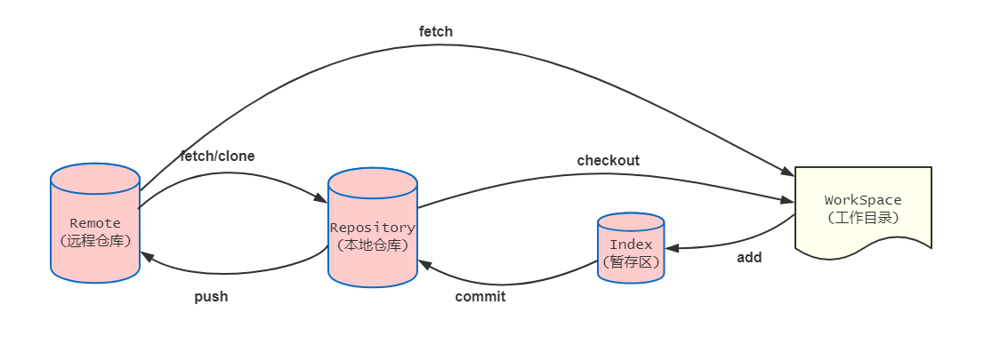

Git
→ 深度学习 Git ，可以参考官网挂出的这本 《Pro Git》 。
序言
Git 是一个神奇的工具，对，神奇的！！！
设置与配置
有两个十分常用的命令： config 和 help 。
在开始使用 Git 之前，我们用它来指定我们的名字，邮箱地址和编辑器偏好，如下：
1: $ git config --global user.name "John Doe" 2: $ git config --global user.email johndoe@example.com
获取与创建项目
有几种方式获取一个 Git 仓库。 一种是从网络上或者其他地方拷贝一个现有的仓库（ git clone ），另一种就是在一个目录中创建一个新的仓库（ git init ）。
git clone 实际上是一个封装了其他几个命令的命令。过程如下：
- 它创建了一个新目录，切换到新的目录，
- 然后
git init来初始化一个空的 Git 仓库， - 然后为你指定的 URL 添加一个（默认名称为
origin的）远程仓库（git remote add）， - 再针对远程仓库执行
git fetch， - 最后通过
git checkout将远程仓库的最新提交检出到本地的工作目录。
快照基础
……
我们只看一些很有趣，但以前没有注意的命令。
1. 交互式暂存
运行 git add [-i|--inteactive] ，Git 将会进入一个交互式终端模式，显示类似下面的东西：
1: $ git add -i 2: staged unstaged path 3: 1: unchanged +0/-1 TODO 4: 2: unchanged +1/-1 index.html 5: 3: unchanged +5/-1 lib/simplegit.rb 6: 7: \*** Commands *** 8: 1: [s]tatus 2: [u]pdate 3: [r]evert 4: [a]dd untracked 9: 5: [p]atch 6: [d]iff 7: [q]uit 8: [h]elp 10: What now>
它将暂存的修改列在左侧，未暂存的修改列在右侧。
FAQ
推送指定分支到远程分支上
如果你本地的分支名称和远程名称相同，则使用以下命令：
1: git push origin branchName
如果本地的分支跟远程的分支不一样，则指定本地和远程的分支的名称：
1: git push origin localBranchName:remoteBranchName